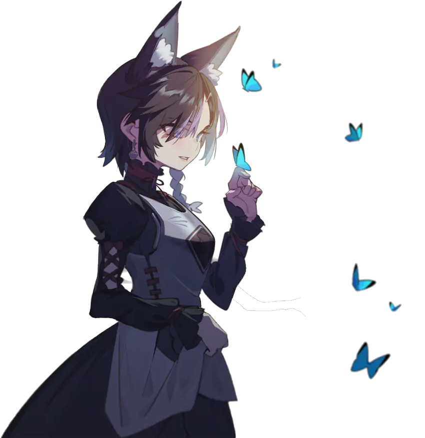

www.ikia.top
Ikia's fansite.

All the things of Ikia
is here.
Songs
The songs Ikia have sung on the air.
Will update unscheduledly.
the Summer Wind
Rice Fragrance
Love You
a Traveler
Recorded live
The records of Ikia's live broadcasts.
Will update unscheduledly, too.
:D
Re-creations
Fan-made artworks, light novel and others.
With the permissions of the original authors.